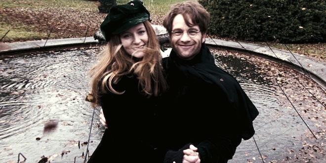
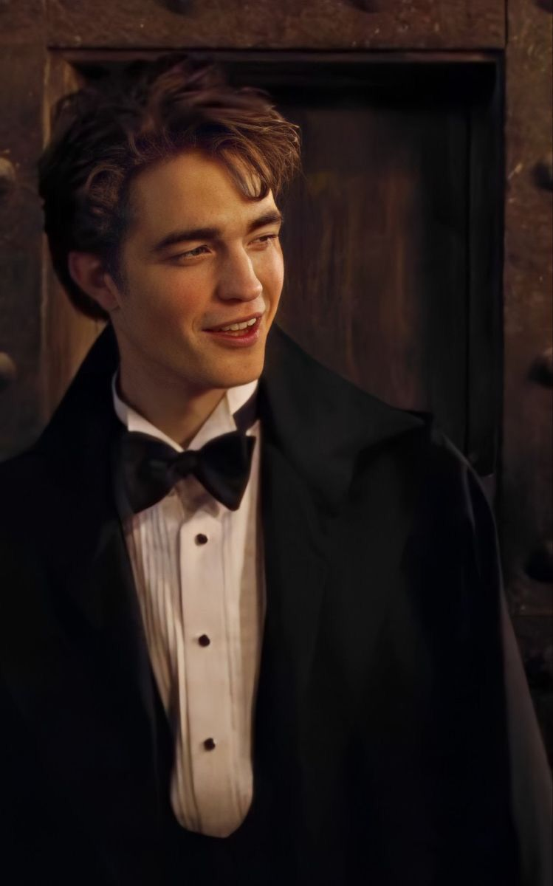
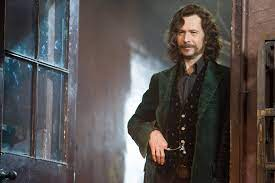
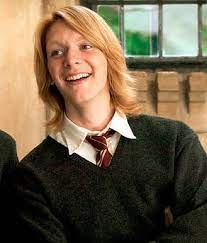
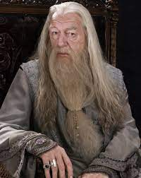
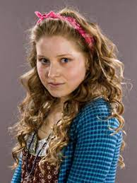
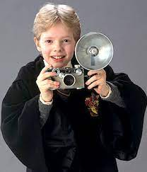
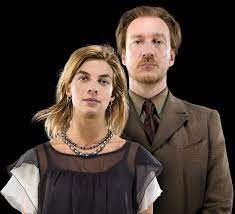
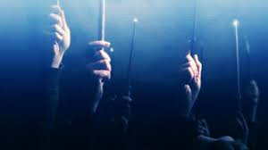

Let's raise our wands
In the Harry Potter books and movies a lot of characters that are close to many fans hearts have died and it affected the golden trio deeply. This list is to remember all the characters that have passed away. The list may not include all characters but the characters who've had an impact on the characters and fans.
| Name | Image | Description |
|---|
| Lily and James Potter |  | Lily and James Potter are Harry's parents and were a part of the Order of the Phoenix.They died on October 31st 1981 in their home in Godric's Hollow. Lord Voldemort wanted to kill their son instead of them but they were in the way. Lily's sacrifice saved Harry and destroyed Voldemort (if Voldemort did not have horcruxes he would have been destroyed for forever but that's not the case). |
| Cedric Diggory |  | Cedric Diggory was a character in the 4th book that was described as a handsome, tall and strong boy around the age of 17. He was 17 when he died. Cedric was the Hogwarts champion in the tri-wizard tournament and competed along with 3 other champions, Fleur Delacour (from the beauxbatons), Victor Krum (from Dumstrang) and Harry Potter (a fellow Hogwarts student). He was killed by Peter Pettigrew on Voldemort's orders. Everyone was devastated at his death, especially his girlfriend, Cho Chang.He died on the 24th of June. |
| Sirius Black |  | Sirius Black is Harry's godfather and was introduced to us in the 3rd book. He was the cousin of Narcissa Malfoy, Andromeda Tonks and Bellatrix Lestrange and was the best friend to Remus Lupin, James Potter and formerly Peter Pettigrew. He died on June 18th because Bellatrix pushed him into the veil because of a spell. |
| Fred Weasley |  | Fred Weasley was one of the main characters in the books who was loved by many people. He and his twin brother George were the pranksters of Hogwarts and always got in trouble. Fred died in the battle of Hogwarts and his family was devastated. George was the most affected by his death because he felt like he lost his other half. |
| Albus Dumbledore |  | Albus Percival Wulfric Brian Dumbledore was the headmaster at Hogwarts for many many years and died due to the killing curse that was casted by Severus Snape. Not known to many people Dumbledore asked Snape to kill him instead of Draco because he was sick and didn't want to put Draco through killing him. |
| Lavender Brown |  | Lavender Brown was the ex-girlfriend of Ron Weasley and was introduced as one of the main characters in the 5th book and is very overprotective of people she loves. She died in the battle of Hogwarts as well. |
| Colin Creevey |  | Colin Creevey was a first year during the second book and was harry's biggest fan. He would follow Harry to quidditch games an always begged for a signature. He died in the battle of Hogwarts at 16 years old. |
| Remus Lupin and Nymphadora Tonks |  | Remus and Tonks were the dream couple in the Harry Potter universe. They had a son named Teddy Lupin just less than a year before they died and Teddy was taken care of by his godfather Harry after their death. Lupin and Tonks were brave aurors who helped harry in the battle of Hogwarts. They died side by side during the battle of Hogwarts. |
| Others |  | It is impossible to sum up all the deaths into one list and many other people died during the battle of Hogwarts and everyone else who died have had a big impact on the other characters. |